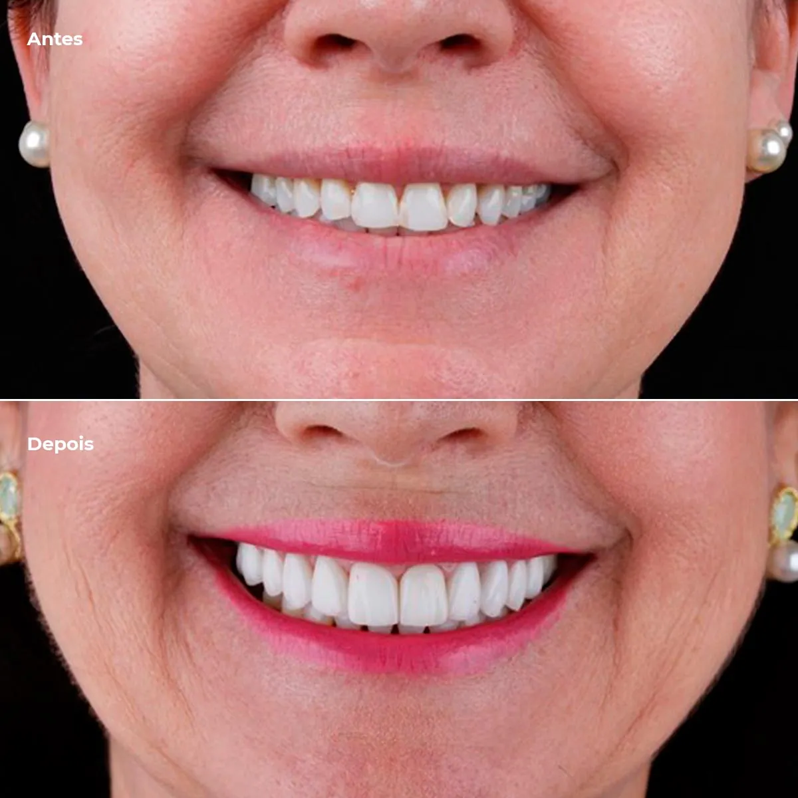

Estética do sorriso
Lentes de contato dental
Laminados de cerâmica ultrafinos, feitos sob medida para corrigir cor, forma e proporção dos dentes, planejados em harmonia com o seu rosto.

Para quem é indicado
- Manchas que o clareamento não resolve
- Espaços entre os dentes (diastemas)
- Dentes desgastados, pequenos ou com formato irregular
- Restaurações antigas aparentes nos dentes da frente
- Quem quer harmonizar o sorriso como um todo
Lente ou faceta?
As duas são laminados cerâmicos, peças finas de porcelana que se unem ao dente natural e formam uma estrutura sólida, forte e duradoura.
A lente costuma ter entre 0,2 e 0,5 mm de espessura; a faceta é um pouco mais espessa. Na prática, é a necessidade de cada dente que define a espessura da peça, e é isso que o planejamento decide com você.
Como é o tratamento
Avaliação e fotografias
Exame clínico, fotografias odontológicas e escaneamento digital para entender o seu sorriso em detalhe.
Planejamento do sorriso
Definimos juntos cor, formato e proporção, considerando o rosto, os lábios e a sua expectativa.
Preparo e confecção
A necessidade e a extensão do preparo dos dentes são definidas no planejamento. As peças são confeccionadas uma a uma.
Cimentação e ajustes finos
As lentes são fixadas e ajustadas na mordida. Depois, consultas de acompanhamento cuidam da longevidade.
Cerâmica ou resina?
Os dois materiais podem corrigir imperfeições parecidas, mas têm limites, cuidados e durabilidade diferentes. A escolha depende da avaliação do seu caso.
Laminados cerâmicos
- Em geral, mais resistentes ao desgaste
- Brilho e cor mais estáveis com o tempo
- Pedem planejamento e, às vezes, preparo do dente
Facetas em resina
- Investimento menor
- Muitas vezes, sem preparo do dente
- Pedem polimento e manutenção mais frequentes



Preciosismo no atendimento, nos serviços e nos detalhes do ambiente. Os procedimentos são muito bem explicados e a gente se sente seguro em tudo que é proposto e feito pelos dentistas da clínica.
Perguntas frequentes
Lente de contato dental estraga o dente?
Quando bem indicadas, as lentes buscam preservar ao máximo a estrutura natural do dente. Alguns casos pedem um preparo maior; isso é avaliado dente a dente, e você conhece o plano antes de começar.
Quanto tempo duram?
Com boa higiene e consultas de manutenção, a cerâmica mantém cor e brilho por muitos anos. Quem range os dentes recebe cuidados extras, como uma placa para usar à noite.
Posso clarear os dentes antes?
Sim, e muitas vezes é o recomendado. O clareamento define a cor dos dentes que vão continuar naturais, e as lentes são feitas para combinar com eles.
Quantas consultas são necessárias?
Depende do número de dentes e do planejamento. O cronograma completo é apresentado na avaliação, antes de começar.
Quanto custa?
O valor depende do que cada caso precisa. Na consulta de avaliação, o dentista examina, explica as opções e você recebe um orçamento claro antes de decidir. A Ichiban não trabalha com convênios: o atendimento é particular.
Veja também
Tratamentos relacionados

Clareamento dental
Dentes mais claros com segurança, em casa ou no consultório.
Conhecer o tratamento
Facetas em resina
Correção de forma e cor feita direto no dente, muitas vezes sem preparo.
Conhecer o tratamento
Harmonização orofacial
Equilíbrio entre sorriso e face, valorizando os seus traços.
Conhecer o tratamentoNo blog
Leia antes da consulta
Lentes de contato dental: o que são e quando são indicadas
As lentes de contato dental são lâminas finas de cerâmica, feitas sob medida e fixadas na parte da frente dos dentes. A espessura costuma ficar entre…
A importância da fotografia odontológica
Fotografias padronizadas da boca e do sorriso fazem parte do atendimento na Clínica Ichiban. São registros clínicos que ajudam em três momentos do…
Primeira consulta
Solicite seu agendamento
Envie sua solicitação pelo site a qualquer hora ou fale com a recepção pelo WhatsApp. O horário é confirmado pela recepção.
- EndereçoRua Canudos, 129
Jardim Higienópolis · Londrina – PR - HorárioSegunda a sexta: 8h às 12h · 13h30 às 18h
Sábado: 8h às 12h - Telefone(43) 3027-5101
- ConvêniosAtendimento particular, com orçamento claro